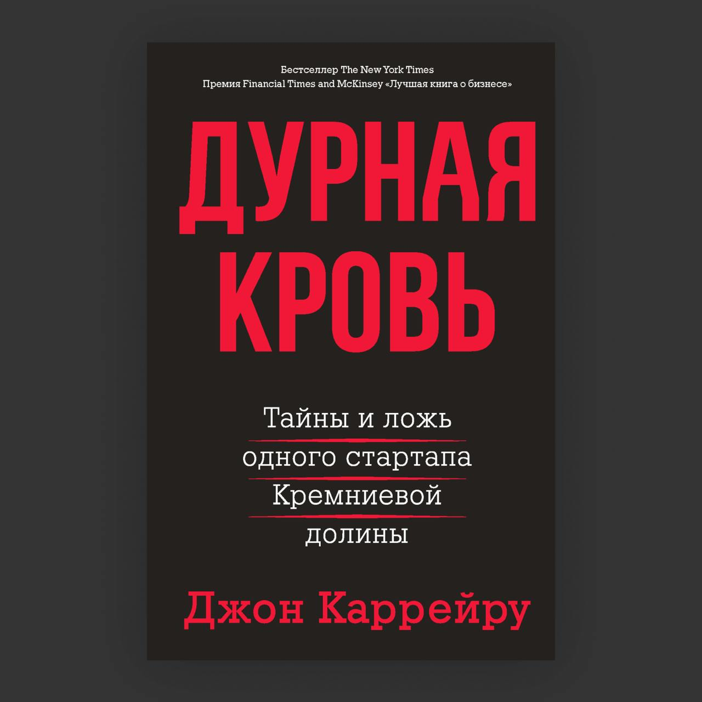

Краткая история:
Элизабет Холмс, главная героиня книги «Дурная кровь», с юных лет мечтала изменить мир. Она вдохновлялась Стивом Джобсом, его видением и стремлением сделать технологии доступными для каждого. Холмс хотела совершить собственную революцию — на этот раз в медицине. Её идея была амбициозной и дерзкой: создать устройство, которое могло бы проводить десятки медицинских анализов по одной капле крови.
Эта мечта звучала как спасение для миллионов. Элизабет обладала харизмой, умением вдохновлять и собирать вокруг себя людей. Вскоре её стартап Theranos привлёк $700 миллионов инвестиций, а сама компания достигла оценки в $9 миллиардов. Холмс стала самой молодой женщиной-миллиардером, которая заработала своё состояние самостоятельно. Она говорила о глобальных изменениях и вдохновляла инвесторов и сотрудников, обещая спасение жизней.
Но за этим фасадом скрывалась трагедия. У Холмс не было технического опыта, чтобы воплотить свою идею в жизнь. Устройство под названием Edison, которое должно было стать её революцией, не работало. Диагностические тесты были недостоверными, а результаты подменялись, чтобы скрыть провалы. Компания продолжала привлекать миллионы, основываясь на обещаниях, которые никогда не могли быть выполнены.
Theranos стала не символом успеха, а примером, как стремление к изменению мира без прагматизма может обернуться катастрофой. Компания рухнула. Инвесторы потеряли сотни миллионов долларов. Пациенты, доверившиеся Theranos, получили ошибочные диагнозы. А Элизабет Холмс предстала перед судом за мошенничество.
Эта история — напоминание о том, что романтического стремления изменить мир недостаточно без честности, опыта и реальных результатов.
